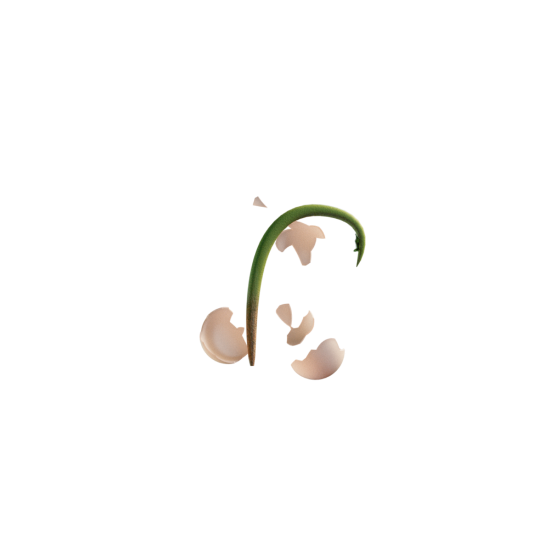

{% extends "./templates/layout/_base.html" %}

{% block page_title %}
		Survey - Q19
{% endblock %}

{% block page_header %}
	{{ header(showSound=true, showHelp=true, showMenu=false) }}
{% endblock %}

{% set pageClass='page--survey' %}

{% block page_content %}
	<div class="container container--survey">
		<div class="row row--survey">
			<div class="col col--6 col--question">
        <div class="question question--col">
          <h1 class="title title--survey question__title">
            If you had to pick one, in which of the following stages of the creative process do you feel most confident?
            <span class="question__subtitle">(pick one)</span>
          </h1>
          <div class="question__wrapper">
            <div class="question__answer">
              <input class="question__input" type="radio" name="q19" id="q19-1">
              <label class="question__label" for="q19-1"><span class="question__text">Defining the problem</span></label>
            </div>
            <div class="question__answer">
              <input class="question__input" type="radio" name="q19" id="q19-2">
              <label class="question__label" for="q19-2"><span class="question__text">Generating lots of ideas or possible solutions</span></label>
            </div>
            <div class="question__answer">
              <input class="question__input" type="radio" name="q19" id="q19-3">
              <label class="question__label" for="q19-3"><span class="question__text">Picking the winning solutions from the options</span></label>
            </div>
            <div class="question__answer">
              <input class="question__input" type="radio" name="q19" id="q19-4">
              <label class="question__label" for="q19-4"><span class="question__text">Executing and getting things done</span></label>
            </div>
            <div class="question__answer">
              <input class="question__input" type="radio" name="q19" id="q19-5">
              <label class="question__label" for="q19-5"><span class="question__text">It varies</span></label>
            </div>
          </div>
        </div>
				{% include "./templates/partials/_progress.html" %}
			</div>
			<div class="col col--6 d-flex-col">
				<div class="seed-animation">
					
				</div>
			</div>
		</div>
	</div>
{% endblock %}
